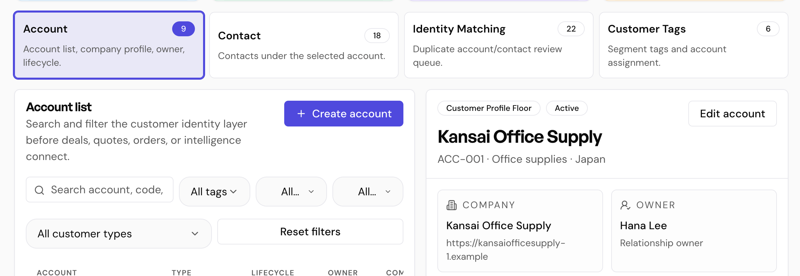
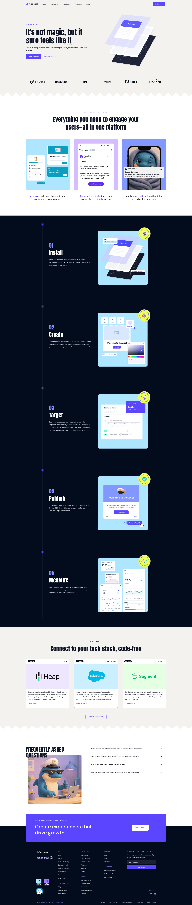
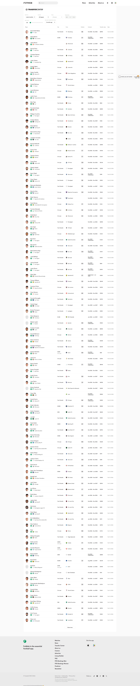
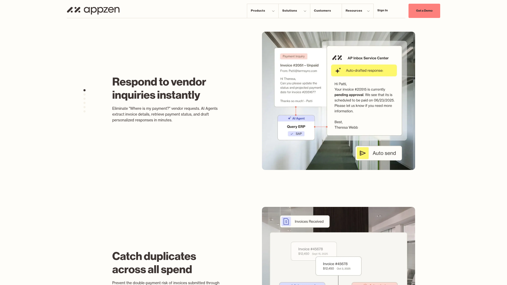

Customer Profile Floor Sub-Page Redesign
Prime OS / Customer Area / CRM Tower / Customer Profile Floor
On ?floor=contact, the UI still shows overview KPI cards and large Account / Contact / Identity / Tags cards before the Contact workflow. The operator reads it as one page with sections, not separate sub-pages.
Target IA
Customer Profile Floor ├─ Overview ├─ Account ├─ Contact ├─ Identity Matching └─ Customer Tags
Proposed Sub-Pages
KPI strip, operating loop, readiness, evidence stack, and next actions into the four operational pages.
Account list, filters, create/edit account, selected Account 360. Contact only appears as count/link.
Compact account selector, contact directory, add/edit contact, primary contact control, coverage warnings.
Duplicate review queue, match detail, confidence, reasons, suggested review action. Review-only state retained.
Tag taxonomy, account assignment, usage counts, future segment usage placeholder.
Sidebar child pages plus compact local segmented nav. Remove the large four-card nav from every sub-page.
References




Implementation Plan
- Add
overviewtoCustomerSubFloor. - Change default
/customer/crm-compactto?floor=overviewbehavior. - Add Overview to sidebar children and local sub-page nav.
- Extract KPI and operating summary into
OverviewSubFloor. - Render Account, Contact, Identity Matching, Customer Tags as page-owned layouts.
- Replace large sub-floor cards with compact tabs/segmented nav.
- Update i18n, route matching, tests, and browser verification.
Decision
Proceed with the IA-first fix.
Risk: existing tests and deep links without floor may assume Account as default. Update deliberately.